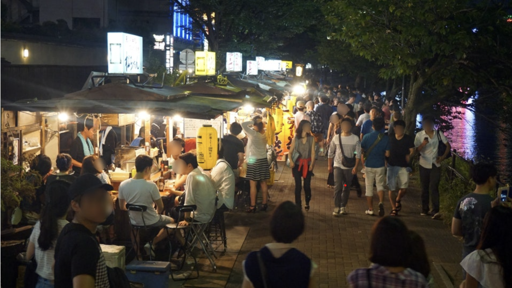
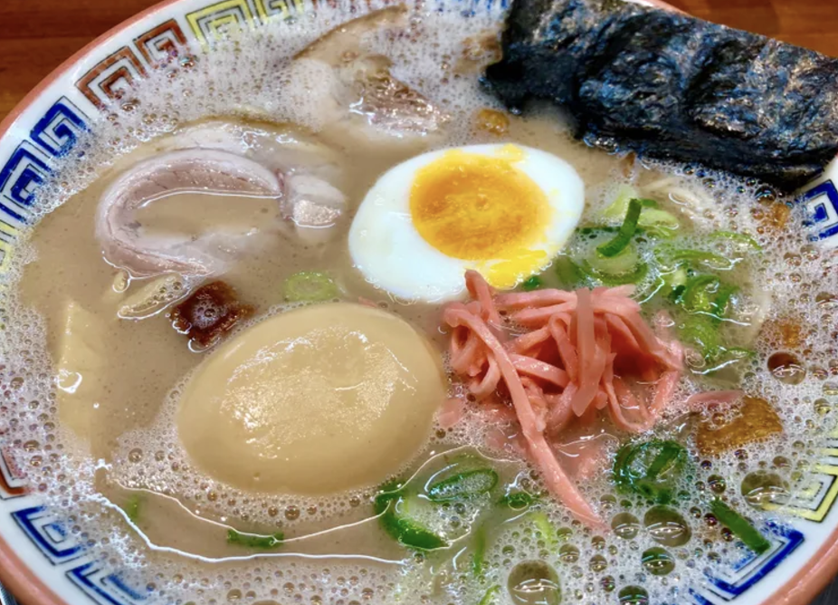

1. 후쿠오카는 어떤 곳인가 ?
후쿠오카는 일본의 섬인 규슈에서 가장 큰 항구 도시로 아시아 대륙과 가깝기 떄문에 예로부터 문화 교류가 활발했기 때문에 빠르게 발전할 수 있었다. 비교적 작은 크기의 도시이기 때문에 빠르게 둘러보고 체험하기에 용이하고 인근의 산과 해변 등의 자연으로 이동하기도 좋다. 우리나라의 부산과 1988년에 자매결연을 맺은 도시이기도 하고 직항편이 많고 가깝다는 특징 덕분에 많은 사람들이 방문하는 도시이다. 오죽하면... 한국 사람이 너무 많아 해외 느낌이 나지 않는다고 선호하지 않는 사람들이 있을 정도다. 우리나라에서 잠시 벗어나, 도시의 인프라를 누리며 맛있는 음식들을 즐기고 싶은 사람들에게 추천하는 여행지이다.
2. 후쿠오카의 자연과 기후

후쿠오카는 우리나라와 비슷한 기후를 느낄 수 있다. 여름에는 덥기도 덥지만 옆에 바로 바다가 있어 습도가 높기 때문에 7~8월에는 찜잘방을 연상케한다.. 매우 덥기 때문에 여름 여행자들에게는 주의를 요한다. 지금 시즌인 겨울 기온은 따뜻한 편이다. 패션을 위한 코트를 챙겨가도 된다. 후쿠오카는 바다 바로 옆에 있는 도시이기 때문에 근처 유명한 해변들이 많고 산에 둘러싸여 있어서 번잡한 도시에 대비되는 차분하고 웅장한 자연까지 느낄 수 있는 곳이다.
3. 후쿠오카에 방문하면 추천하는 장소들
1. 토쵸지 사원
후쿠오카에는 여러 신사들과 사원이 있지만 이 장소는 조금 특별하다. 일본에서 가장 큰 목조 좌불상이 있는 곳이고, 무려 806년에 건립된 사원이다. 기온역에서 가까워 가기 편하고 근처에는 사찰 거리가 형성되어 있어 조용하고 편한 종교적 분위기를 느낄 수 있다. 일본의 종교와 역사에 관심이 있고 복잡한 대도시에 지쳤을 때 방문해보길 추천한다.
2. 오호리 공원
오호리 공원은 후쿠오카성의 외호로 이용되던 하카타만의 후미를 정비하여 1929년에 개원한 전국에서 손꼽히는 수경공원이다. 2km 둘레의 산책로와 계절마다 달라지는 꽃과 자연들이 있고 오호리 공원의 만 안에 있는 4개의 섬은 다리로 연결되어 있으며 이 다리들은 공원의 상징이다. 후쿠오카 시내 중심인 텐진 인근에 위치에 있어 부담 없이 다녀올 수 있고 공원 인근에는 이쁜 카페들도 많아 여행의 여유를 느낄 수 있는 곳이다.
3. 나카스 포장마차거리
위에 장소들에서 여유를 느꼈다면 이제부터는 본격적으로 사람들의 열기를 느낄 때이다. 나카스 거리는 맛집과 술집이 즐비해 있는 후쿠오카 최대의 번화가이다. 특히 밤이 되면 화려한 조명들로 더 아름다워지는데, 나카스 강 일대를 중심으로 쭉 이어지는 쇼핑몰과 포장마치 거리는 현지인들에게도 사랑받는 장소이다. 포장마차 주인과 손님들이 어우러져 같이 이야기를 하는 문화를 접한다면 그 순간만큼은 모두가 하나가 되어 근심걱정 잊고 행복을 느낄 수 있을 것이다.
4.후쿠오카에서 꼭 먹어야 하는 것들
1. 하카타 라멘
여러 문화 교류의 장이었던 후쿠오카에서 우연히 돼지뼈로 라멘 국물을 만들어냈고, 이것이 돈코츠 라멘의 시초라고도 한다. 돼지뼈로만 우려낸 진한 국물과 얇고 부드러운 면을 사용한 돈코츠 라멘은 한국에서도 쉽게 접할 수 있는 요리가 되었지만 후쿠오카의 라멘은 다르다. 자부심이 엄청나서 매번 평가에서 탈락되는 라멘집들은 없어질 정도라 아무 가게나 들어가서 먹어도 맛집이라는 말이 있다. 라멘의 본고장, 그 중에서도 돈코츠 라멘의 탄생지에서 먹는 라멘은 의미적으로나 맛으로나 매우 특별할 것이다.
2. 모츠나베
이 음식도 100년 이상의 역사를 가진 음식이다. 소의 내장인 곱창, 대창 등을 '모츠'라고 부르는데, 이 내장을 부추, 양배추, 마늘과 함께 끓여서 먹는다. 다 먹고 남은 국물에는 면이나 밥을 추가해 먹는 문화는 마치 한국을 보는 것 같다. 이번 시즌인 추운 겨울에 후쿠오카를 방문한다면, 쌀쌀한 저녁 따뜻한 국물과 함께 일행과 이야기를 나누며 먹는 모츠나베는 술안주로도 제격일 것이다.
3. 멘타이코

우리나라에서 자주 즐기는 밥도둑 '명란' 명란의 종주국이라고 자처하는 우리에게 이웃나라 일본은 매우 큰 라이벌이다. 일본은 현재 세계 명란생산량의 90%를 장악하고 있고 명란 소비량도 엄청나다. 명란을 이용한 수많은 레시피를 묶은 명란 요리책도 매우 인기이다. 후쿠오카는 항구 도시에 걸맞게 일본 명란 '멘타이코'의 발상지로 밥 반찬부터 라멘이나 우동이랑도 함께 즐길 수 있고 선물용으로도 많이 팔린다. 한국의 명란보다 덜 짜고 덜 자극적이며 더 통통한 명란을 한번 맛보는 것을 추천한다.